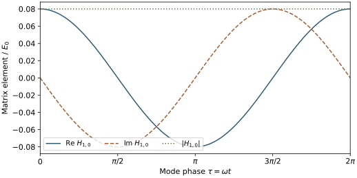
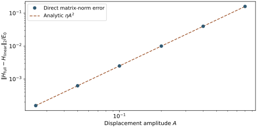

HefeiNAMD Series - Part III
The EPC Route to Carrier Dynamics
Part II admitted finite-wavevector nuclear motion by enlarging the simulation cell, then obtained nonadiabatic coupling from electronic wavefunctions along the trajectory. The electron-phonon coupling (EPC) route builds the time-dependent electronic Hamiltonian from a different starting point: reference Bloch states, their linear response to lattice displacements, and phonon coordinates that evolve in time.
The central chain is reference electronic structure + phonon modes + EPC matrix elements + a nuclear path → electronic Hamiltonian → carrier dynamics. A phonon dispersion alone supplies only part of this information. We will derive the matrix construction, identify where the trajectory enters, and separate the underlying idea from choices made by the public HefeiNAMD-EPC implementation.
Practical FAQ: choosing real-space or EPC dynamics, comparing Hamiltonians and hopping rules, and using finite-temperature phonons.
1. Keep the reference electronic basis fixed
Choose a reference geometry \(\mathbf R_0\). Its Kohn-Sham (KS) Hamiltonian defines the Bloch states and energies
The basis states remain those of \(\mathbf R_0\), even when the nuclei move. Consequently their time derivatives vanish. The physical electronic Hamiltonian at a displaced geometry is generally not diagonal in this basis:
This is a fixed reference Bloch representation. It has the practical character of a diabatic representation, but choosing it does not establish a globally complete, strictly diabatic finite band manifold. The retained states must still cover the dynamics of interest. This representation is the starting point of Zheng et al.'s momentum-space formulation, Eqs. (5)–(9).
2. Expand the electronic Hamiltonian in displacement
Let \(u_{l\kappa a}\) be the displacement of atom \(\kappa\), in primitive cell \(l\), along Cartesian direction \(a\). The leading change in the electronic Hamiltonian is
The derivative describes how the electrons respond to moving an atom. In a self-consistent KS calculation, it includes the induced change in electronic density and potential, not merely the derivative of a bare ionic potential. Keeping this term defines linear EPC. Computing it once lets us assemble approximate Hamiltonians for many displacements without solving a fresh electronic eigenproblem at every time.
This approximation is distinct from the harmonic approximation to the nuclear potential energy \(U\):
Here \(I,J\) collect atomic and Cartesian indices, and the linear nuclear-energy term vanishes at equilibrium. Linear EPC truncates the electronic operator after first order. Harmonic nuclear dynamics truncates the nuclear potential energy after second order. One may use a nonharmonic trajectory with linear EPC, but doing so does not restore the electronic terms that were omitted.
3. Phonons organize the atomic displacements
Consider a Born-von Kármán periodic crystal containing \(N_p\) primitive cells. Normalize the dimensionless phonon eigenvectors by
Using mass-weighted normal coordinates \(Q_{\mathbf q\nu}\), expand the displacement as
\(\mathbf R_l\) is the equilibrium lattice vector, \(M_\kappa\) is the atomic mass, \(\mathbf q\) is the phonon wavevector, and \(\nu\) labels its branch. The eigenvector specifies which atoms move and in which directions; \(Q(t)\) specifies how far along that pattern the system has moved. The frequency \(\omega_{\mathbf q\nu}\) supplies its harmonic time scale.
Real atomic displacements require matched opposite-wavevector modes. In a consistent phase convention,
They cannot be sampled as two unrelated real vibrations. Independent real sine and cosine modes provide one convenient way to enforce this condition. A phonon dispersion gives the frequencies; it does not specify the normal coordinates, their initial amplitudes, or their phases.
4. EPC matrix elements measure the electronic response to a mode
Insert the displacement expansion into the linear electronic Hamiltonian. Define the mode derivative operator
The matrix element of this operator asks a concrete question: how strongly does this displacement pattern mix two reference electronic states? Translating the crystal produces a lattice phase sum
Thus a mode with wavevector \(\mathbf q\) connects \(\mathbf k\) to \(\mathbf k+\mathbf q\), modulo a reciprocal lattice vector \(\mathbf G\). For nonzero \(\mathbf q\), this perturbation carries finite crystal momentum, unlike the translation-preserving path in Part I. Other symmetries may still make an allowed matrix element vanish.
For each stable, nonzero-frequency mode define a mass-weighted zero-point scale and an energy-valued EPC matrix element:
The Bloch states here are normalized over the full periodic crystal. With mass-weighted \(Q\), both \(Q\) and \(\ell\) have units of square-root mass times length; \(Q/\ell\) is dimensionless and \(g\) has units of energy. Some conventions introduce a reference mass and a length-valued normal coordinate instead. The product \(gQ/\ell\) must remain consistent when changing conventions.
The full-operator definition also accommodates nonlocal terms. For a local potential, extracting its Bloch phase yields the usual primitive-cell matrix element between cell-periodic electronic functions. The EPW theory documentation gives that standard convention and the self-consistent perturbation construction. Frequencies and polarization vectors alone cannot supply \(g\): they describe the lattice, while \(g\) also depends on the electronic states and their response.
5. Multiply each response by its actual displacement
The linear EPC Hamiltonian in the fixed reference basis is now
The three ingredients have separate jobs. \(g\) measures the electronic sensitivity to a mode; \(Q(t)/\ell\) measures its instantaneous displacement; the momentum condition selects the electronic state pairs it can connect. The reference energies provide the unperturbed spectrum. Even a large \(g\) produces no instantaneous linear perturbation when that coordinate is zero. A nonzero coordinate can also shift diagonal energies, particularly through q = 0 contributions.
The complex phases of \(g\), the electronic states, and the phonon eigenvectors must be consistent. A table of \(|g|^2\), adequate for some rate formulas, does not generally contain enough phase information to reconstruct this Hamiltonian. Opposite-q matching and the Hermitian electronic response must yield \(H(t)=H^\dagger(t)\). \(N_p\) belongs to the normalization volume and cannot be changed as an arbitrary coupling-strength parameter.
Dense k/q grids can be generated through primitive-cell perturbation calculations and interpolation. They represent many spatial wavelengths without explicitly running a molecular-dynamics trajectory in an equally large real-space cell. The wavelengths have not disappeared: they are encoded in the q grid and mode coordinates. This reduces one source of cost, while matrix-element storage, band truncation, and k/q convergence remain.
6. The Hamiltonian still needs a nuclear path
For an independent, mass-weighted real harmonic mode, let \(P=\dot Q\) and write
The frequency does not determine \(Q_0\) or \(P_0\). An initial ensemble or a specified preparation must supply them. In a quantum thermal harmonic oscillator, with \(\beta=1/(k_BT)\), the coordinate variance is
This identifies a thermal fluctuation scale, including a zero-point term. It does not uniquely prescribe a collection of real-time trajectories or make a classical coordinate into a quantum operator.
For example, Gaussian Wigner sampling with this coordinate variance, momentum variance \(\hbar\omega(2n+1)/2\), and zero coordinate-momentum covariance reproduces the independent harmonic mode's symmetrized linear-coordinate correlation under harmonic propagation. The ordinary ordered quantum correlation additionally has an imaginary commutator contribution. Keeping a zero-point variance alone therefore does not establish quantum absorption/emission asymmetry or detailed balance. This example is an ensemble choice, not a description of the default code sampler.
In the inspected public source, EPCTYPE=1 initializes two equal real factors \(\sqrt{n+1/2}\) and advances their positive- and negative-frequency phases. For matched frequencies their sum corresponds to
This branch does not randomly sample the initial phonon phases. Different initial-time offsets select different segments of the prescribed oscillations. The Bose factor changes the driving amplitude; it does not by itself renormalize the input harmonic frequencies into a finite-temperature anharmonic dispersion.
A second conceptual route is to obtain \(\mathbf u(t)\) from an atomic trajectory and project it onto the reference modes:
This can carry nonharmonic time dependence, provided the trajectory contains the required wavelengths. A small primitive-cell trajectory still cannot generate missing finite-q modes by projection. The repository has an EPCTYPE=2 decomposition routine, but the inspected active propagation path does not establish a complete connection from its projected-coordinate array to the Hamiltonian driver. That interface needs verification before being treated as a working alternative. Rigid zero-frequency translations must be handled separately, and unstable imaginary-frequency modes cannot be inserted into a stable thermal harmonic-oscillator prescription.
7. Propagate the electrons, then specify the hopping approximation
With \(a,b\) denoting band-and-k pairs, the fixed-basis coefficient equation is simply
Compare this with the instantaneous adiabatic representation of Part II, whose coefficient propagation matrix is \(\epsilon_\alpha(t)\delta_{\alpha\beta}-i\hbar d_{\alpha\beta}(t)\). There the off-diagonal term arises from the moving basis. Here the basis is fixed and the displaced physical Hamiltonian has off-diagonal elements. Energy-valued \(g\) is not a numerical substitute for inverse-time NAC \(d\).
For complete representations of the same model and path, a time-dependent unitary basis transformation relates these two descriptions, including the moving-basis term. Actual calculations also differ through displacement truncation, nuclear paths, band windows, and hopping choices. Merely changing representation does not make those approximations equivalent.
Electronic propagation alone determines coherent amplitudes. Its outward population current is
A stochastic active-state scheme is an additional construction; Part II explains the fewest-switches surface-hopping (FSSH) idea. In this EPC source, electronic propagation uses the time-dependent matrix, while the switching routine also uses precomputed, broadened scattering weights built from squared EPC amplitudes, occupations, and energy matching, with a thermal acceptance factor. These weights are neither \(H_{ab}(t)\) itself nor a consequence forced by the basis transformation. The switching model must be assessed separately from the Hamiltonian construction.
The classical-path approximation (CPA) is another independent choice: the nuclei or mode coordinates follow a prescribed path without responding dynamically to the selected electronic excitation. It is not defined by the use of a fixed basis. In the inspected branch, accumulated phonon-excitation counts are separate from the coordinates driving \(H(t)\); reporting such counts does not establish feedback into the next nuclear step.
8. A four-site check separates representation from truncation
Consider a four-site periodic model, with site index \(l=0,\ldots,3\) and Bloch index \(r=0,\ldots,3\). Use normalized plane waves and a nearest-neighbor reference Hamiltonian:
Let a prescribed dimensionless displacement travel through the ring, and define a linear on-site response:
The independent Fourier selection rule predicts
with indices modulo four. A direct transformation of the real-space Hamiltonian gives the same matrix. For \(A=0.4\) and \(\lambda=0.4E_0\), the selected element is \(H_{1,0}=0.08E_0e^{-i\omega t}\).

Next give the toy electronic response a quadratic term, \(V_l^{\rm full}=\lambda x_l+\eta x_l^2\), with \(\eta=0.25E_0\). At \(t=0\), the operator-norm error from retaining only the linear term is

The reproducible script compares the two independent linear-Hamiltonian constructions over 201 phases. Their maximum entrywise discrepancy is below \(10^{-13}E_0\), and the fitted amplitude power of the quadratic truncation error is 2. The matrix-element time series, amplitude scan, and check summary are available. Run python assets/code/hefeinamd_epc_hamiltonian.py with NumPy and Matplotlib. These checks validate the stated toy algebra and error law, not a material model, carrier lifetime, or the source program's hopping algorithm.
9. Put the ingredients into a calculation
A practical EPC workflow follows the dependencies of the Hamiltonian:
- Choose the reference structure and electronic window. Compute the electronic states and establish the initial carrier state and observable.
- Compute lattice modes and electronic response. Density-functional perturbation theory (DFPT) provides harmonic modes and self-consistent perturbations. Wannier interpolation can then supply bands, phonons, and complex EPC matrix elements on finer compatible k/q grids.
- Define the nuclear preparation and path. Supply mode amplitudes and phases or a verified projection of an atomic trajectory. State the temperature, normalization, and feedback approximation.
- Construct and propagate \(H(t)\). Check momentum mapping, Hermiticity, band-window and grid convergence, the nuclear sampling interval, and the electronic integration step.
- Specify the statistical readout. Distinguish coherent populations from active-state occupations, state the switching and decoherence rules, and identify whether phonon quantities are prescribed coordinates or accumulated event statistics.
The documented upstream chain for HefeiNAMD-EPC uses Quantum ESPRESSO, Wannier90, qe2pert.x, and a compatible patched Perturbo to prepare *_ephmat_p*.h5 files for namd-epc. Perturbo's official interface guide describes the intermediate *_epr.h5 database; that database is not interchangeable with the EPC program's final matrix-element files. Wannier functions serve interpolation here; the carrier coefficients above are labelled by reference Bloch band and momentum.
The method is attractive when a periodic reference crystal and momentum-resolved scattering are central to the question. Large structural rearrangements, changing bonding, strong displacement dependence, or important nuclear feedback demand further modeling. In particular, replacing harmonic frequencies by a finite-temperature phonon spectrum does not by itself update the electronic derivatives or define the real-time nuclear ensemble.
The essential distinction from Part II is where the time-dependent electronic information comes from. The real-space route repeatedly evaluates instantaneous electronic states along nuclear configurations. The linear EPC route evaluates their reference response once, resolves it into modes, and multiplies that response by coordinates along a chosen path. Both routes still need the path, a converged state space, and a specified dynamical approximation.
10. FAQ: choosing and extending the EPC method
These questions compare the prescribed-path real-space workflow in Part II with the public EPC implementation inspected here. Method statements and source-code statements have different scopes: the latter refer to NAMDinMomentumSpace@689c952 and the real-space Hefei-NAMD@b7c8fc5, rather than every member of the software family.
- Which method should I choose for a particular process?
- How do the electronic Hamiltonians differ?
- How do their FSSH hopping rules differ?
- Which phonons are used, and can finite-temperature phonons replace them?
Q1. Which method should I choose for a particular process?
Start with the observable and the physical mechanism. EPC is a natural starting point when a periodic reference crystal, electronic momentum, and phonon-resolved scattering are central. Instantaneous-state real-space NAMD is often more convenient when local electronic character and structural fluctuations are central. This is a judgment about model suitability, not a universal accuracy ranking.
| Process and desired information | Useful starting point | What must still be checked |
|---|---|---|
| Hot-carrier cooling, intravalley or intervalley transfer, and the contributions of particular q points or phonon branches in a crystal | EPC, with explicit band/k labels and compatible k/q sampling | Whether a fixed reference and linear electronic response cover the sampled displacements; convergence of the state window, grids, and scattering broadening |
| Defect capture, interfacial transfer, or changes in the localization and layer character of electronic states | Real-space snapshots and NAC, with appropriate spatial or layer projections | Supercell size, thermal sampling, state tracking, and the approximations used for trapping or recombination; a changing band label alone is not charge transfer |
| Carrier dynamics strongly affected by anharmonic thermal distortions | Real-space NAMD on a suitable MD path, or an EPC extension driven by a verified anharmonic path | Classical MD is not quantum nuclear dynamics; an anharmonic path does not repair a first-order electronic expansion |
| Self-trapping, polaron formation, photoinduced structural changes, or reactions driven by the excited carrier | A model with suitable excited-state forces and electronic–nuclear feedback | Neither default prescribed-path route guarantees the carrier-induced lattice response. Large distortions may also invalidate the reference EPC expansion |
| Exciton dynamics, electron–hole recombination, or spin-selective processes | A branch with the required interacting or spin-dependent Hamiltonian | Neither the words “real space” nor “EPC” establish electron–hole interactions, spin–orbit coupling, or the required transition mechanism |
The authors' graphene study is an example of the first row: momentum and phonon-branch resolution explain the cooling mechanism. The official MoS₂/WS₂ tutorial results in Part II illustrate the instantaneous-state workflow. They do not establish that one method is always better for all crystals or interfaces.
A periodic defect or interface supercell can also serve as an EPC reference. The difficulty is practical and physical: the small-cell advantage may shrink, many bands may be required, and large structural changes can defeat a local displacement expansion. Conversely, real-space calculations can resolve primitive momenta through projection or unfolding if the supercell contains the relevant components. For a fair comparison, match the initial state, nuclear ensemble, electronic model, observable, and feedback assumptions before comparing relaxation times.
Q2. How do the electronic Hamiltonians differ?
Real-space NAMD uses a moving electronic basis; EPC uses a fixed reference basis and an approximate displaced electronic operator. “Adiabatic versus diabatic-like” describes the representation, but it does not describe all the approximations.
In instantaneous orthonormal adiabatic KS states, the physical electronic operator is diagonal. The coefficient equation also contains the motion of those basis states:
Here \(G^{\rm ad}\) is the coefficient propagation matrix, not just the matrix of the instantaneous physical Hamiltonian. The NAC term has units of inverse time; multiplication by \(-i\hbar\) gives an energy. Energies and wavefunction changes come from the sampled geometries, so this construction does not impose a first-order expansion in nuclear displacement. It still inherits electronic-structure, trajectory, finite-size, and retained-state errors.
In EPC's fixed reference Bloch basis, \(a,b\) label band-and-k pairs. With \(I\) collecting atomic displacement coordinates, the same coefficient equation instead uses
The mode-resolved \(gQ/\ell\) formula in Section 5 is this linear displacement term written in phonon coordinates. Its off-diagonal elements are physical potential matrix elements in the fixed basis. The matrix elements \(g\) have energy units; they cannot be inserted in place of \(d\). The missing higher-order electronic terms remain missing even if the nuclear path is fully anharmonic.
If the two complete bases represent the same electronic operator along the same path, their generators are related by
This is a representation identity. A truncated linear EPC model and a snapshot calculation with a different path need not satisfy it as numerical models. The harmonic approximation for the nuclear potential and the classical-path approximation for feedback are separate choices. See Section 2 and the authors' coefficient equations.
Q3. How do their FSSH hopping rules differ?
The general population-current idea can be used in either representation. The inspected EPC code adds a static scattering-weight construction that is not identical to the current of its propagated Hamiltonian. Fixed Bloch states do not make a current-based switching rule impossible; directly substituting an energy-valued EPC matrix element into an adiabatic NAC formula would be incorrect.
For any orthonormal representation with coefficient equation \(i\hbar\dot z=Gz\) and Hermitian generator \(G\), define outward pair current by
The elementary fewest-switches construction uses the positive outward current, the source population, and a sufficiently short step:
In the adiabatic basis this gives \(J_{a\to b}=2\,{\rm Re}[c_a^*d_{ab}c_b]\). In the fixed EPC basis it uses the instantaneous complex \(H^{\rm EPC}_{ab}(t)\). The inspected real-space routine uses the NAC-based expression, followed by a thermal correction. These are populations in the chosen basis; equivalent coefficient propagation does not make approximate stochastic switches invariant under arbitrary basis changes.
By contrast, EPC's calcEPC precomputes a nonnegative real quantity. For the inspected EPCTYPE=1 branch, its mode sum can be written as
Here \(g^0\) is the matrix element before the program's \(1/\sqrt{N_p}\) scaling, \(\mathbf q\) is the mapped momentum for the state pair, and \(\sigma\) is an energy broadening. This equation is a rewriting of the source expression, not a derivation of a new hopping theory. \(W\) has energy units. It is not already a transition rate, is not \(\sqrt W\), and is not \(H_{ab}(t)\). Squaring \(g\) removes its complex phase; the matching Gaussians select reference energy differences near a phonon energy. Both frequency channels carry \(n+1/2\) here, rather than the separate \(n\) and \(n+1\) weights of a textbook quantum absorption/emission rate.
The EPC switching routine then uses
Here \(\Delta t\) is the POTIM hopping interval, not an electronic substep. The coefficients still come from propagation with \(H^{\rm EPC}(t)\), so the switching statistics remain trajectory-dependent. However, \(W\) itself contains neither the instantaneous displacement nor its phase. It resembles a broadened second-order scattering weight, while the actual hopping expression also depends on electronic coherence. It should not be relabelled as a population-only golden-rule master equation or presented as the exact current of \(H^{\rm EPC}(t)\).
For an electron, the code sets \(B_{ab}=\exp[-(\epsilon_b^0-\epsilon_a^0)/(k_BT)]\) for upward transitions and one otherwise; the hole branch reverses the energetic direction. The real-space source also applies a Boltzmann suppression to uphill carrier transitions. These corrections do not establish exact quantum detailed balance or explicit energy exchange with moving nuclei. In the prescribed-path routes, a switch does not rescale the saved nuclear velocities. Full FSSH with nuclear feedback is a further model, explained in Part II.
Thus changing the phonon path while leaving \(W\) untouched creates a consistency question: propagation and switching would use different descriptions of the driving fluctuations. The fixed-basis formulation does not require this mismatch. A new trajectory-driven implementation must specify and validate its hopping rule as well as its Hamiltonian; changing only a phonon input is insufficient.
Q4. Which phonons are used, and can finite-temperature phonons replace them?
The documented default uses reference harmonic DFPT phonons with temperature-dependent occupation factors. A finite-temperature effective-phonon model can replace the harmonic lattice model, but a frequency list alone is not a complete replacement.
There are three different objects to keep separate:
- Reference harmonic modes. The standard QE →
qe2pertworkflow obtains a dynamical matrix and electronic perturbation potentials by density-functional perturbation theory at a specified reference structure. This is commonly called a zero-temperature harmonic calculation. More precisely, it is a reference-structure curvature calculation with the chosen electronic occupations and smearing; it is not an exact zero-temperature quantum-renormalized phonon spectrum. - Thermal occupations. In the inspected
EPCTYPE=1driver,TEMPenters the Bose factor and the amplitude \(\sqrt{n+1/2}\), while input frequencies remain fixed. Temperature also enters hopping acceptance, and sets the broadening whenSIGMA=0. None of these operations computes anharmonic frequency shifts. - Finite-temperature lattice dynamics. An effective dynamical matrix, quasiparticle frequencies, spectral peak weights, and linewidths are related but distinct. A set of effective frequencies and eigenvectors does not uniquely specify a full dynamical spectral function.
One practical route is an effective harmonic model at the target temperature. The temperature-dependent effective potential method (TDEP) and the stochastic self-consistent harmonic approximation (SSCHA) provide ways to obtain temperature-dependent lattice information. Perturbo already documents upstream interfaces: TDEP second-order force constants can enter qe2pert; SSCHA dynamical matrices can be supplied on the matching q grid. This is an existing interface in the current upstream documentation. It does not certify compatibility with the older patched Perturbo required by the inspected EPC program.
A consistent replacement must update the modes, their normalization, and the mode-resolved electronic couplings together. In the mass-weighted convention used above,
\(D^{\kappa j}_{ab}(\mathbf q)\) is the electronic response to a Cartesian displacement pattern; \(j\) is a Cartesian direction. To fix the Fourier normalization, use full-crystal-normalized reference states and define
This Fourier sum has no additional \(1/\sqrt{N_p}\) factor; that factor remains in the Hamiltonian of Section 5. The mode relation follows the usual EPC normalization. If the reference structure and Cartesian electronic derivatives are retained, those derivatives can be reprojected onto the new eigenvectors and rescaled: a new frequency does not by itself require recomputing every electronic derivative. This retains a reference electronic response; it does not calculate every finite-temperature correction to the electron–phonon interaction. If the structure, screening, or electronic model changes, their reuse needs separate justification. Keeping old \(g\) while arbitrarily changing \(\omega\), \(\ell\), and eigenvectors generally changes the electronic perturbation inconsistently.
The updated information must reach the interpolated EPC files, the coordinate driver, and the static hopping weights in Q3, with consistent q mapping and opposite-q phases. The author's Perturbo patch uses the mode eigenvectors and \(1/\sqrt{\omega}\) normalization when exporting \(g\); editing only a frequency dataset would leave these quantities inconsistent. This route includes an effective frequency renormalization. Independent undamped oscillators with those frequencies still do not generate phonon lifetimes, mode-to-mode energy redistribution, non-Gaussian fluctuations, or carrier-induced feedback. In SSCHA, the optimized auxiliary frequencies, the free-energy Hessian, and physical excitations from a dynamical response are distinct, as explained in the official spectral-function tutorial.
A second route is to keep an explicit anharmonic nuclear path. Given consistent Cartesian electronic derivatives, one can construct \(H(t)\) directly from the displacements, or project those displacements onto a complete mode basis. Finite-temperature modes can then serve as analysis coordinates; fitting a spectrum is not a mandatory step before constructing \(H(t)\). A complete change of coordinates with the derivatives transformed consistently leaves the linear electronic perturbation unchanged. Actual path amplitudes should not receive an additional \(\sqrt{n+1/2}\) multiplier.
For path-integral molecular dynamics (PIMD), the sampling clock is not physical real time: Fourier transforming an ordinary thermostatted PIMD trajectory does not give a physical phonon spectrum. Static quantum-correlation estimators can extract effective vibrational information, but require a specified estimator and do not supply real-time linewidths. Ring-polymer molecular dynamics (RPMD) instead supplies an approximate real-time route. Its bead internal modes are auxiliary degrees of freedom, so a bead-resolved Fourier spectrum cannot automatically be read as a set of physical phonons; spurious resonances in RPMD vibrational spectra are a known issue.
Using RPMD to drive the electrons would additionally require choosing a centroid, bead-resolved, or other electronic interface, defining the initial ensemble and hopping rule, and checking the target electronic observable. The repository's EPCTYPE=2 decomposition entry does not establish a verified end-to-end implementation of this extension. Effective finite-temperature phonons and explicit RPMD driving are therefore two different modeling routes, not interchangeable input switches.
The supported conclusion is that finite-temperature lattice information can enter upstream of the EPC Hamiltonian. It improves a specified part of the lattice model; it does not by itself remove linear-EPC truncation, define quantum electronic relaxation, or validate the current switching approximation.
Sources and further reading
- Z. Zheng et al., Ab initio real-time quantum dynamics of charge carriers in momentum space, Nature Computational Science 3, 532–541 (2023); author manuscript, especially Eqs. (5)–(11).
- EPW theory documentation: Bloch normalization, phonon coordinates, self-consistent perturbations, and EPC conventions. The mass-weighted coordinate convention is stated explicitly in this article.
- HefeiNAMD-EPC source snapshot, commit
689c952: implementation statements above refer to this version, rather than every program called momentum-space NAMD. - Quantum ESPRESSO to Perturbo and interpolation of bands, phonons, and EPC matrix elements.
- Perturbo interfaces to TDEP and SSCHA; SSCHA spectral-function tutorial: effective lattice matrices and physical spectra have distinct roles.
- T. Morresi et al., Probing anharmonic phonons by quantum correlators: A path integral approach; M. Rossi, M. Ceriotti, and D. E. Manolopoulos, How to remove the spurious resonances from ring polymer molecular dynamics.
- NAC and moving-basis foundations; Part II's real-space construction and FSSH.